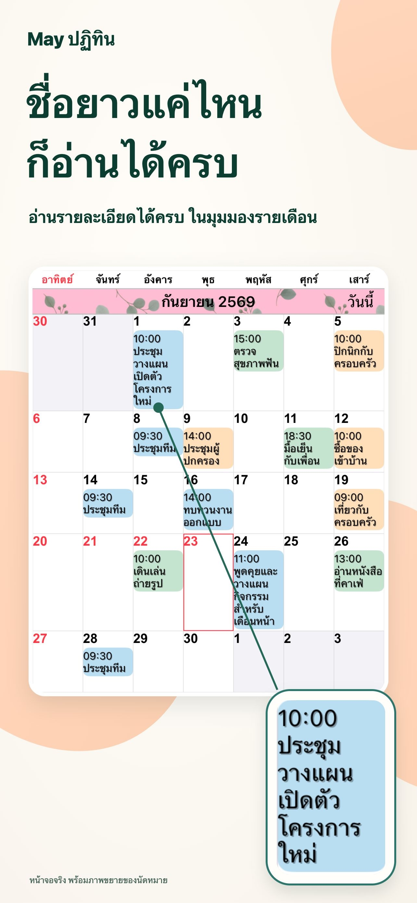
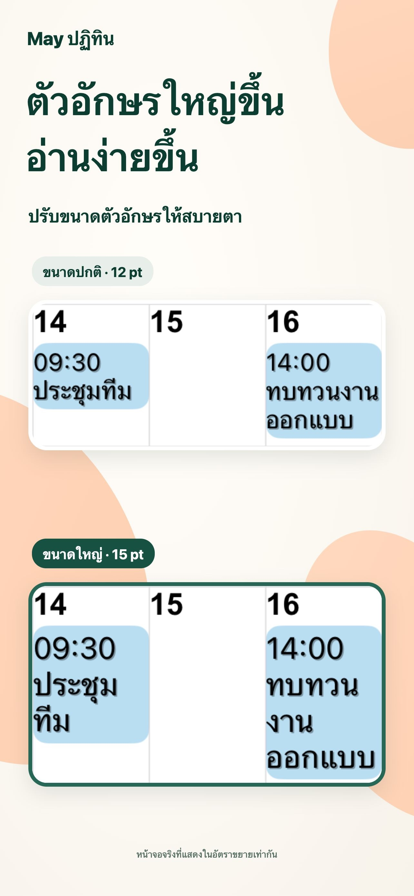
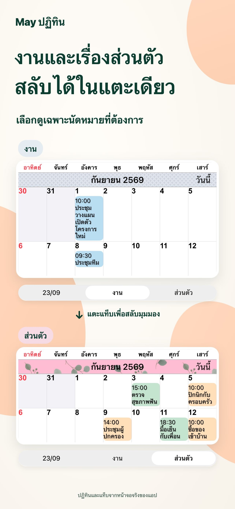
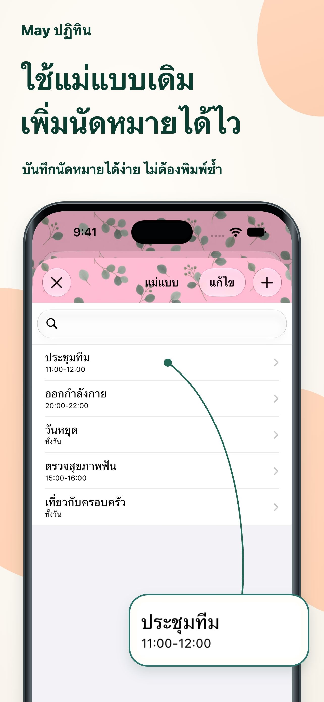

หน้าตาในแบบที่คุณชอบ
จับคู่สีธีม พื้นหลังกิจกรรม และลวดลาย เพื่อสร้างปฏิทินของคุณเอง
มองทุกวันได้ชัดเจนขึ้น
ชื่อกิจกรรมยาว ๆ อ่านได้ในมุมมองรายเดือน ปรับข้อความและสีในแบบที่ชอบ เพื่อดูแผนแต่ละวันได้ในพริบตา
สำหรับ iPhone และ iPadดูบน App Storeดาวน์โหลดฟรี · มีการซื้อภายในแอป

วางแผนแต่ละวันได้สบายขึ้น
งานและชีวิตส่วนตัว อยู่ในที่เดียวกันเพื่อทุกวันของคุณ
ปรับปฏิทินให้เข้ากับวิธีวางแผนของคุณ
ชื่อยาวจะแสดงหลายบรรทัด ปรับแบบอักษรและขนาดข้อความเพื่ออ่านรายละเอียด พร้อมเห็นภาพรวมทั้งเดือน

บันทึกชุดปฏิทิน แล้วสลับระหว่างแผนงานกับแผนส่วนตัวได้ด้วยการแตะครั้งเดียว

บันทึกการประชุม ออกกำลังกาย และนัดหมายเป็นแม่แบบ แตะวันที่สองครั้งแล้วเลือกแม่แบบเพื่อเพิ่มกิจกรรม

รายละเอียดเล็ก ๆ ที่สร้างความต่าง
จับคู่สีธีม พื้นหลังกิจกรรม และลวดลาย เพื่อสร้างปฏิทินของคุณเอง
เลือกวิดเจ็ตได้ 20 ประเภท รวมถึงวิดเจ็ตเฉพาะสำหรับ iPad
แสดงเฉพาะกิจกรรมที่ตรงกับข้อความที่ป้อน
คำถามและคำตอบ
ดาวน์โหลดได้ฟรี และมีการซื้อภายในแอป ตรวจสอบราคาและตัวเลือกปัจจุบันได้ที่ App Store ดูบน App Store
รองรับทั้ง iPhone และ iPad โดยมีวิดเจ็ตบางแบบเฉพาะ iPad ดูข้อกำหนดระบบล่าสุดได้ที่ App Store
รองรับรายการเตือนความจำ วันหยุด หมายเลขสัปดาห์ และข้อมูลปฏิทินจันทรคติ พร้อมตั้งวันเริ่มต้นสัปดาห์และเขตเวลาได้
การแจ้งเตือนส่งจากแอปปฏิทินของ Apple ตั้งแจ้งเตือนได้ทั้งก่อนเริ่มและก่อนสิ้นสุดกิจกรรม
ทุกวันชัดเจนขึ้น
เริ่มต้นด้วยปฏิทินที่เหมาะกับคุณ